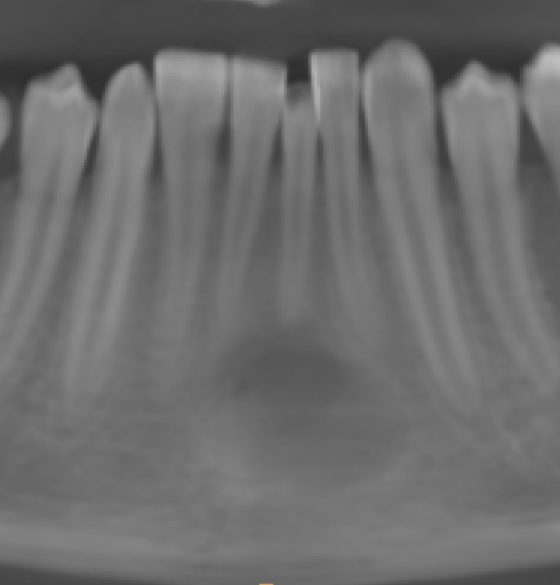
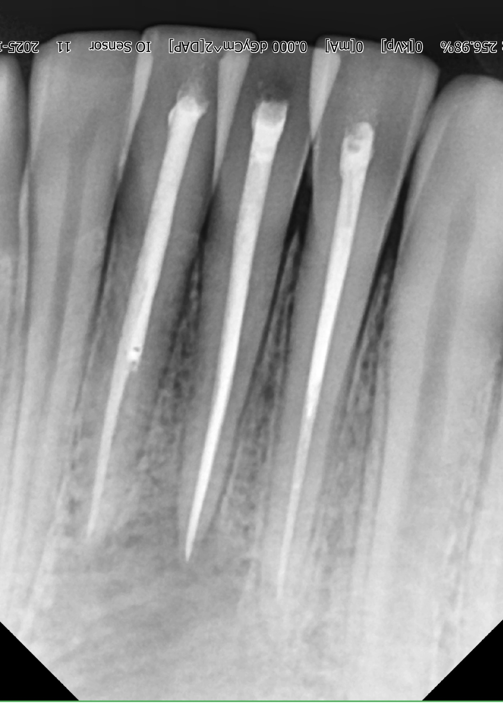

Extra Oral Sinus Formation (EOS) — Chronic Infection Resolved
A patient with recurrent pain, gum swelling, pus discharge, and a facial scar found lasting relief after a careful diagnosis revealed multiple infected teeth and a draining sinus pathway.




Treatment Summary
The patient arrived with recurrent pain, gum swelling, pus discharge, and a facial scar that had persisted despite medicines and surgery done previously at other clinics. Careful clinical examination and X-rays showed that many teeth were infected and that pus was draining through the sinus tract.
Instead of repeating surgery, we chose a non-surgical approach focused on eliminating the infection at its source. Painless root canal treatment was performed on the affected teeth, and the infection was controlled carefully. Over time, the pus discharge stopped, the sinus tract healed, and the facial scar faded as the tissues recovered.
Clinical Notes
- Recurrent pain, gum swelling, and pus discharge
- Facial scar and chronic draining sinus from prior treatment attempts
- Multiple infected teeth identified through X-rays and examination
- Non-surgical, painless root canal treatment performed
- Resolution of pus discharge and improved facial appearance
Frequently Asked Questions
What caused the extra oral sinus?
It was caused by infected teeth and a draining sinus tract that had not been fully treated at the source.
Was surgery needed again?
No. A non-surgical treatment plan focused on root canal therapy and infection control helped resolve the condition effectively.
Did the facial scar improve?
Yes. As the infection resolved and the tissue healed, the sinus pathway closed and the facial appearance improved.